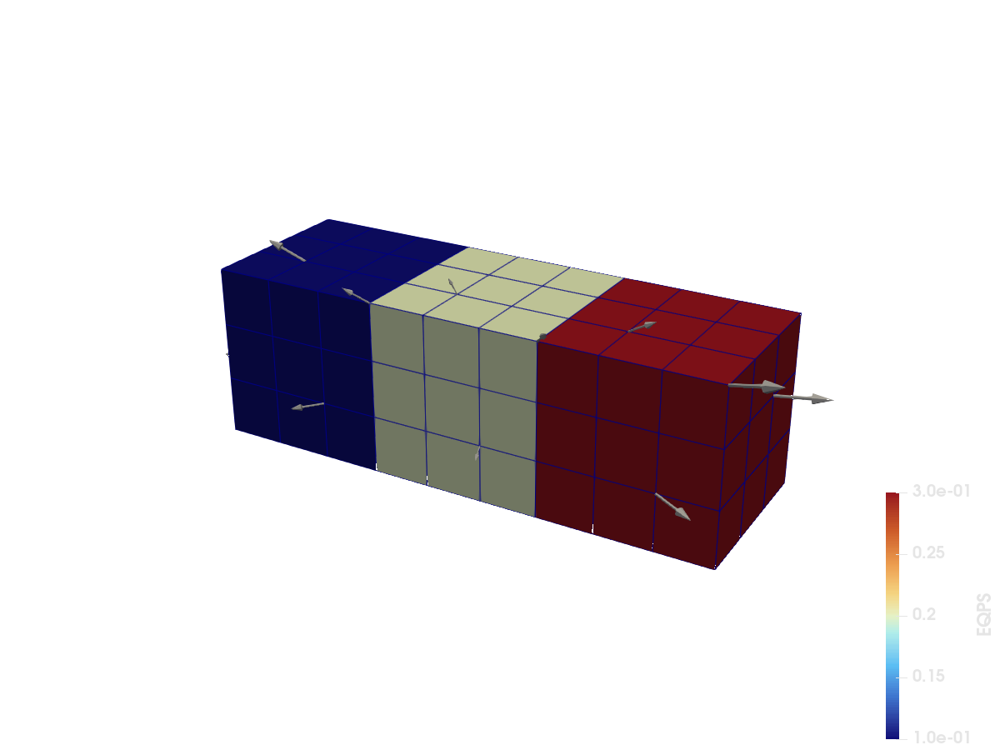

UnstructuredGrid: partitioned mesh
Port of the can-pvtu.vtkhdf example from the VTKHDF specification: an UnstructuredGrid written as three partitions (as a three-rank MPI simulation would produce), each carrying point and cell data, plus a global FieldData array. All partitions land in one file; VTK reads them back as a partitioned dataset. The three partitions colored by EQPS, with a few VEL arrow glyphs:


using VTKHDFA block of n³ hexahedra filling a unit cube at origin:
function hex_block(origin; n = 3)
corners = vec(collect(Iterators.product(0:n, 0:n, 0:n)))
points = [origin[d] + c[d] / n for d in 1:3, c in corners]
id(i, j, k) = i + 1 + (n + 1) * (j + (n + 1) * k)
cells = vec(
[
MeshCell(
VTKCellTypes.VTK_HEXAHEDRON, [
id(i, j, k), id(i + 1, j, k), id(i + 1, j + 1, k), id(i, j + 1, k),
id(i, j, k + 1), id(i + 1, j, k + 1), id(i + 1, j + 1, k + 1), id(i, j + 1, k + 1),
]
)
for i in 0:(n - 1), j in 0:(n - 1), k in 0:(n - 1)
]
)
return points, cells
endCreating the file with the VTKUnstructuredGrid() tag defers the geometry; partitions are then appended one by one together with their data.
vtk = vtkhdf_grid(VTKUnstructuredGrid(), "can")
for (rank, origin) in enumerate(((0, 0, 0), (1, 0, 0), (2, 0, 0)))
points, cells = hex_block(origin)
velocity = points .- [1.5, 0.5, 0.5]
add_partition(
vtk, points, cells;
pointdata = ("VEL" => velocity,),
celldata = ("EQPS" => fill(0.1 * rank, length(cells)),),
)
end
vtk["TimeValue", VTKFieldData()] = [0.001]
close(vtk)Reading it back
The same file can be opened again with vtkhdf_open:
r_can = vtkhdf_open("can")VTKHDFReader{ReadUnstructured} (open)Geometry comes back through read_points/read_cells, with the partitions concatenated and cell connectivity rebased to global point ids, so the cells index directly into the returned points:
size(read_points(r_can)), length(read_cells(r_can))((3, 192), 81)Data arrays use the same indexing syntax as writing, and the partition structure is recoverable as index ranges into them:
extrema(r_can["EQPS", VTKCellData()])(0.1, 0.30000000000000004)VTKHDF.partition_ranges(r_can).cells3-element Vector{UnitRange{Int64}}:
1:27
28:54
55:81close(r_can)